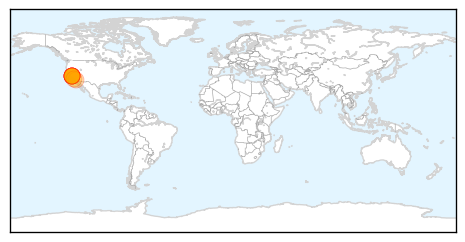
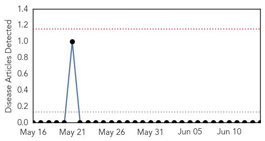

Pertussis
30-Day Web Trend
1 alerts, 0 warnings

30-Day Twitter Trend
0 alerts, 0 warnings

Article Locations
Article Confidences

Top Articles:
- 0.986
- Whooping cough epidemic declared in California
- 0.956
- California Recommends Pertussis Vaccination After Whooping Cough Epidemic
- 0.947
- Whooping Cough Cases in California Cross 2013 Mark
- 0.946
- California health officials: Whooping cough outbreak 'epidemic proportions'
- 0.939
- Whooping cough declared an epidemic in California
- 0.931
- Whooping cough reaches epidemic level in California
- 0.920
- California declares whooping cough epidemic after staggering increase in cases
- 0.913
- California health officials declare whooping cough epidemic
- 0.880
- California Declares Whooping Cough Epidemic, Recommends Vaccinations
- 0.843
- California is Suffering From an Epidemic of Whooping Cough
- 0.810
- Whooping Cough Epidemic In California
- 0.780
- Whooping Cough Is Now a Full-Blown Epidemic in California
- 0.569
- Whooping cough cases reach epidemic proportions
Top Tweets:
-
No tweets found for Jun 14, 2014
Hemmorhagic Fever
30-Day Web Trend
0 alerts, 0 warnings

30-Day Twitter Trend
0 alerts, 0 warnings

Article Locations

Article Confidences

Top Articles:
-
No articles found for Jun 14, 2014
Top Tweets:
-
No tweets found for Jun 14, 2014